404 Demo Night：发言与可穿戴尝试的一条线
把「那晚讲了什么」和「后来硬件上卡在哪里」放在同一篇里，方便自己回看，也方便路过的人理解筑居思最近在试什么。
库里能找到的「文稿」在哪里
名为「404 Demo Night 讨论记录」的笔记目前是结构占位，没有写入逐字现场记录。与那晚展示直接对应的成稿，是活动前几日整理的五分钟路演稿（现场以实际发言为准）。会后我还写了一份会后复盘，侧重讨论命题与情绪状态；几天后又整理了demo 1.0 阶段复盘，把硬件侧的卡点写清楚。本文按时间线把这几份材料串成一条对外可读的线。
一、那晚我大致讲了什么（路演主线）
自我介绍：筑居思，一句话——把梦境、记忆与直觉，外显成可穿戴、可触摸的物。
从 Remake Lab 到「通电」：上一场旧衣改造活动里，我收到许多带着记忆的旧衣，也听到关于告别与执念的故事；那份感动让我想再往前一步——若不仅用剪裁缝纫重构，而是加入更鲜活的表达，是否可行？于是有了「让身体上的装置通电」的冲动；现场用「先藏后露」的方式，讲到关键句再点亮身上的原型。
把当晚定义为「超级 Demo」：身上这件即当时正在跑的 MVP。形式上尝试了六边形——带建筑感、模块化的拼贴，去组织软材料；「衣服是身体居住的最小建筑」，发光的六边形模块，就是给身体搭的一层构筑物——承认它仍粗糙，因为还在生长。
坦白「硬件小白」的三块硬骨头（与路演稿一致，作概括）：
- 电与结构：焊接、烧录、供电链路，在人体动态里保持稳定，仍在啃。
- 软硬件对齐：灯色与情绪语义要对齐程序逻辑，不能靠猜。
- 软材料与硬电子的接缝：固定元件又要可拆洗，物理接口最难，允许先丑着。
收尾态度：若讲到一半线松了、灯灭了，不必惊讶——展示的是过程，不是完美；欢迎有电子织物与软硬结合经验的人事后交流。
样机与工坊影像
以下为 404 Demo Night 前后拍摄的可穿戴原型、人形台架试验、电路模块与六边形织物。
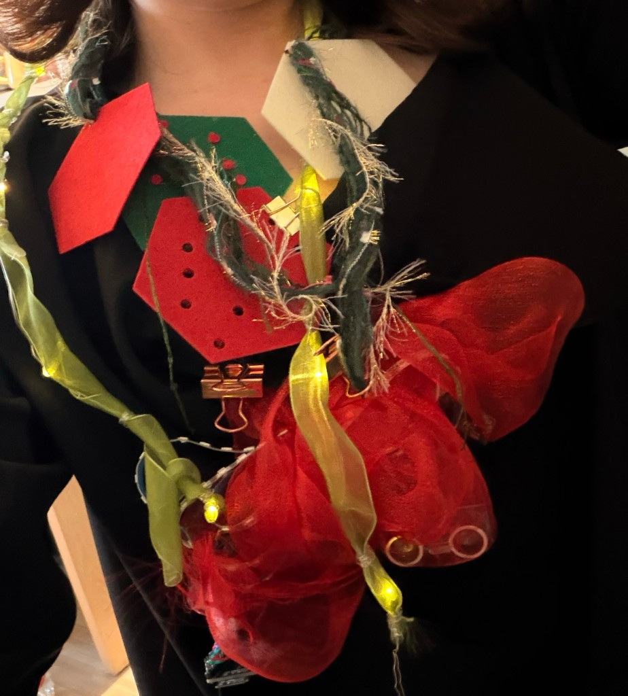
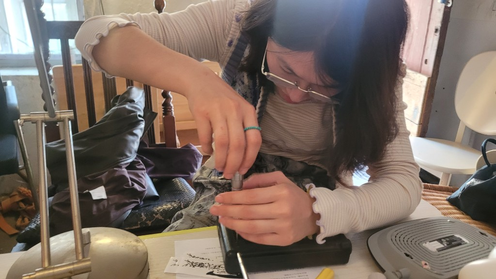
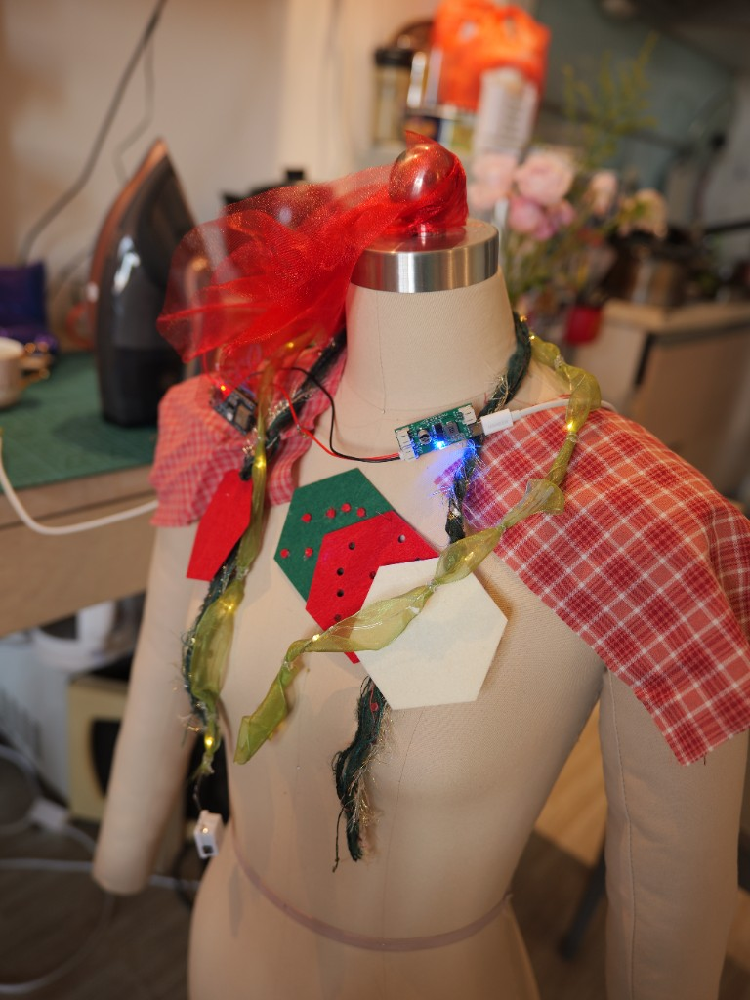
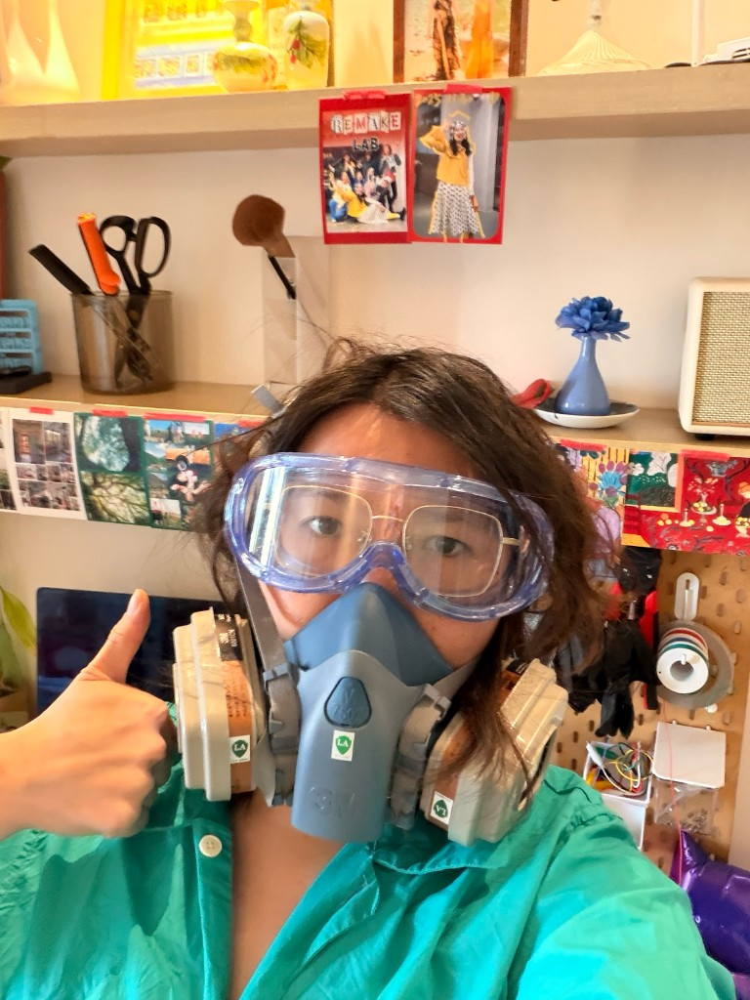
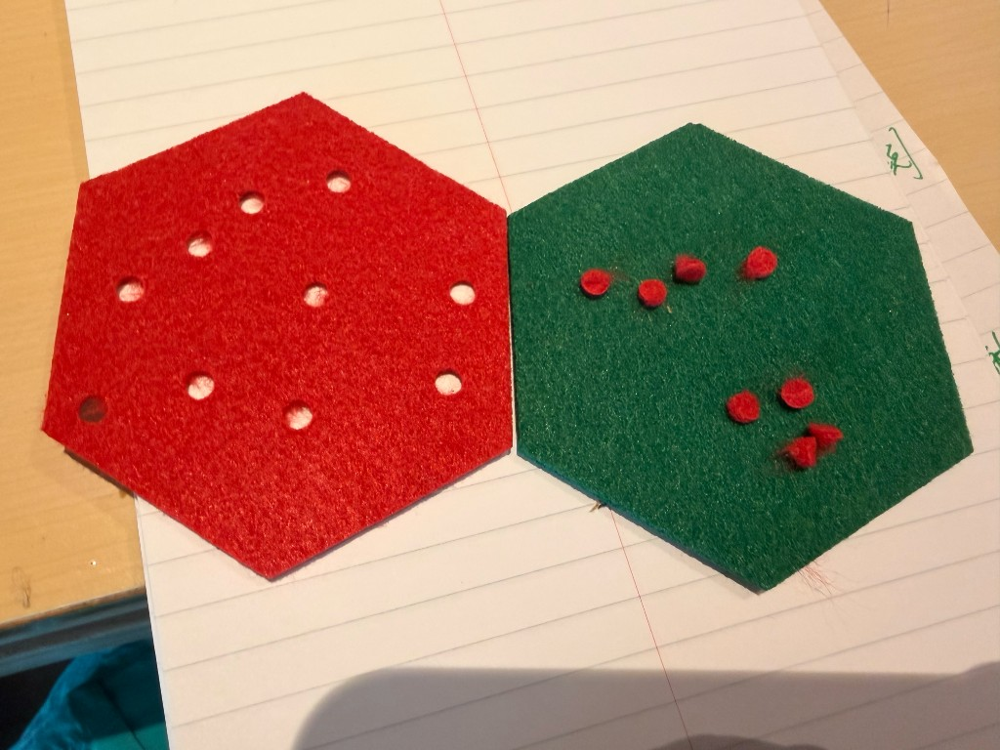
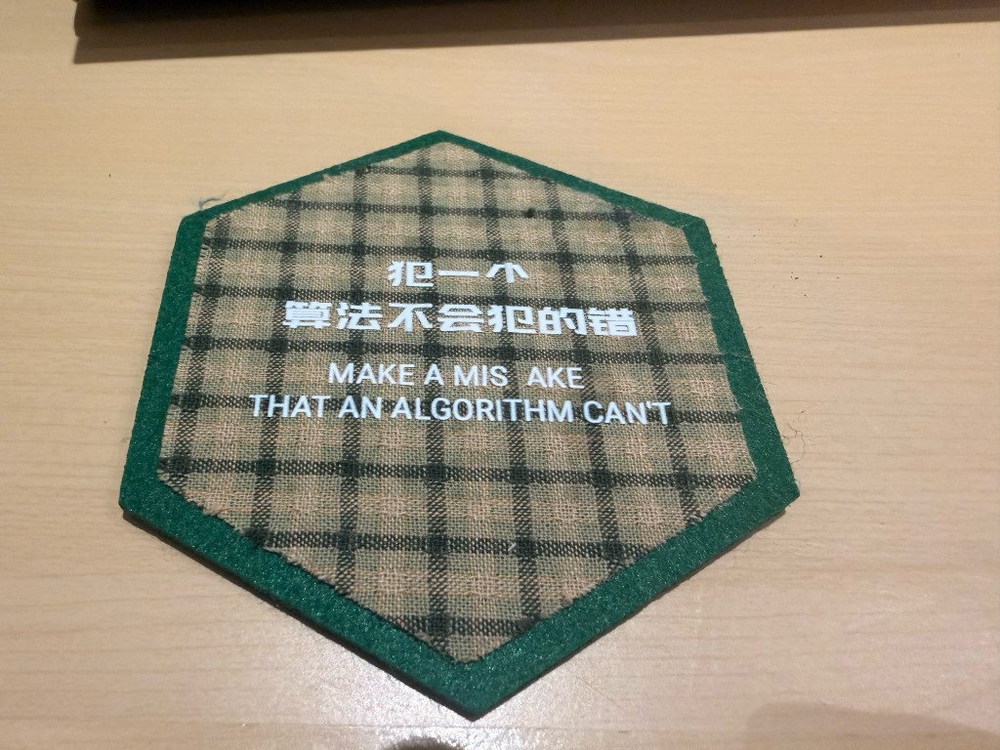
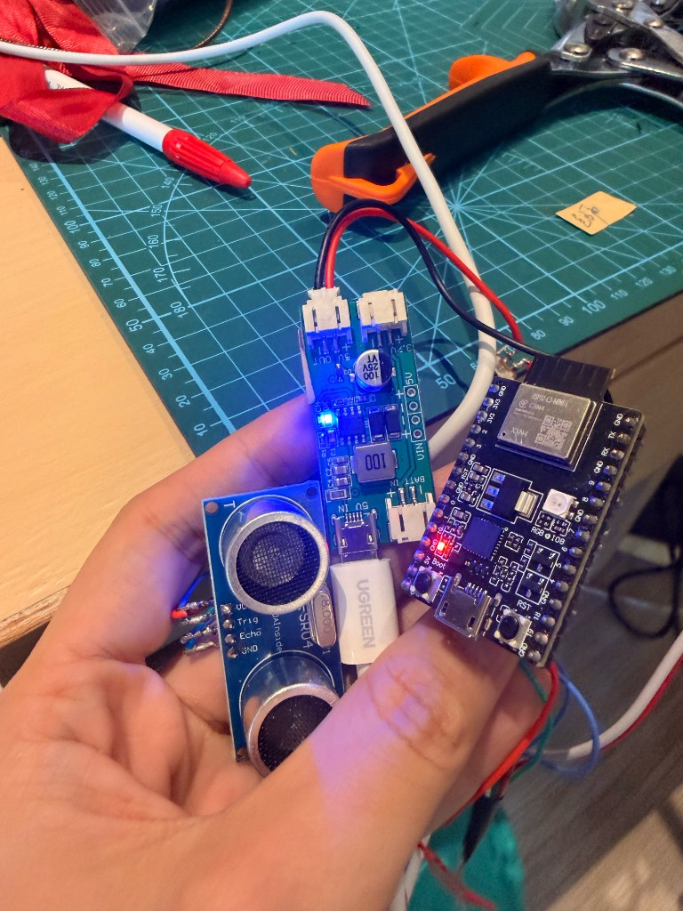
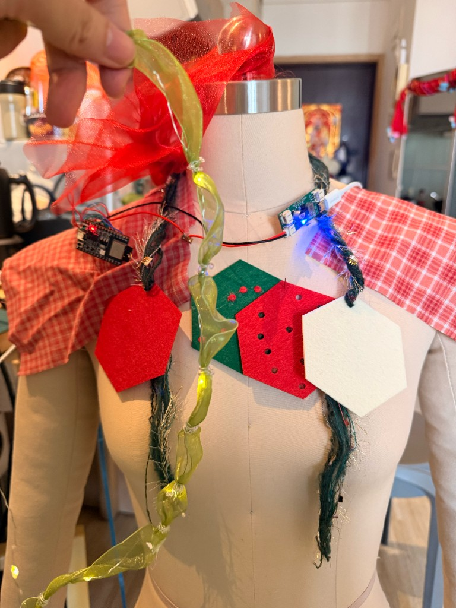
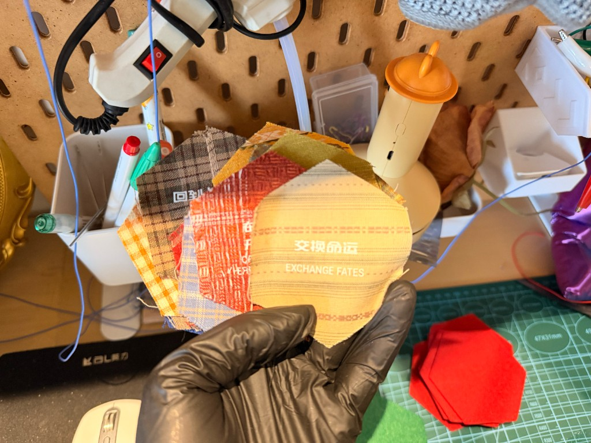
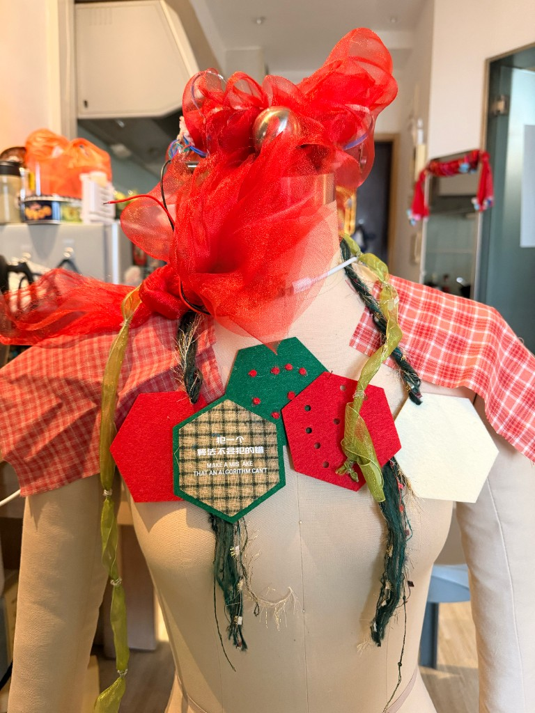
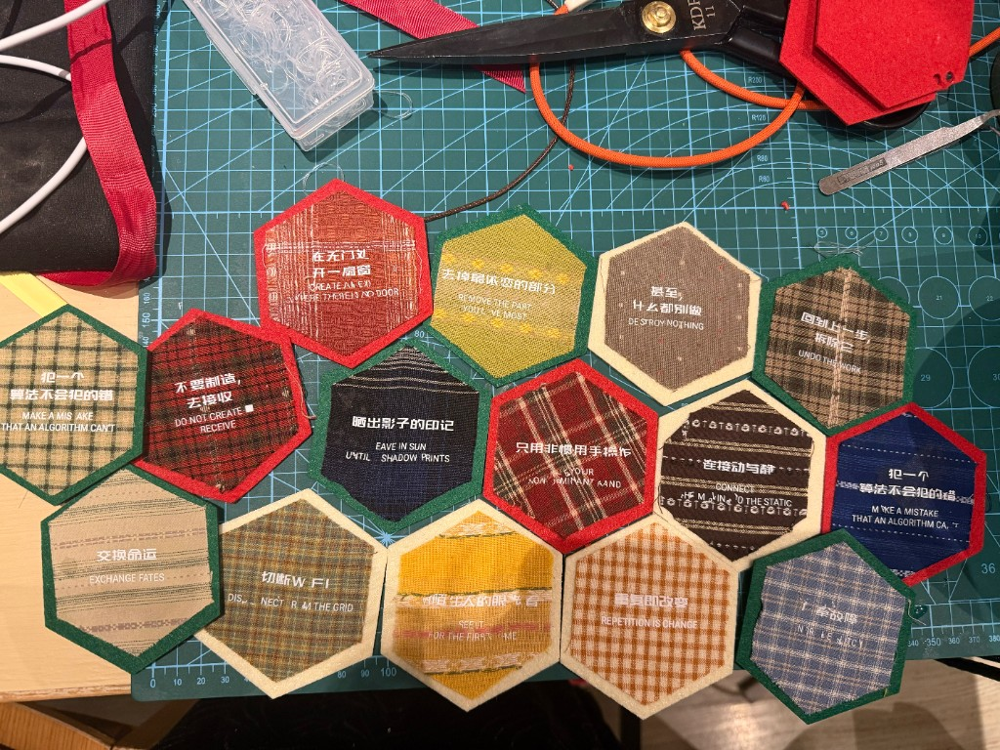
二、同一场讨论里，我带走的一层「命题」
会后复盘里，我把讨论主轴记为「科技私有化」：工具越来越愿意服务个体的情绪安放、记忆组织与意义建构，而不只是大众效率。案例类型里包括时间与记忆收纳、焦虑与自我调节、以及认知与身体界面（含可穿戴触觉原型）。我个人的收束是：在作品仍粗糙时仍愿意先展示，他人的积极反馈会构成继续推进的动能——这与闭门打磨是两条不同的燃料。
三、把「最近的可穿戴尝试」串成线
若只记一条时间轴，可以是：
- Remake Lab（2025 年 12 月内测）：旧衣与故事在场，确认「亲手重塑」的动能；本站有小结影像可对照。
- 从布料到电路的冲动：在拼贴与缝纫之上，尝试通电、光与身体同在场——即 404 Demo Night 上展示的那条 MVP 线。
- demo 1.0 复盘里的「落地纠偏」：例如白天户外光效几乎看不见，与「装置首先服务于自己的感受」这一优先级，会反过来约束后续节奏与形态；焊接、烧录、先把「稳定亮灯与可控节奏」跑通，再谈外观与场景扩展。
这样，「一晚的发言」并不是孤立秀作品，而是同一根造物主线上的一次公开展示；后面的复盘则是把兴奋收束到可验证的小步里，避免在情绪高峰时盲目扩任务。